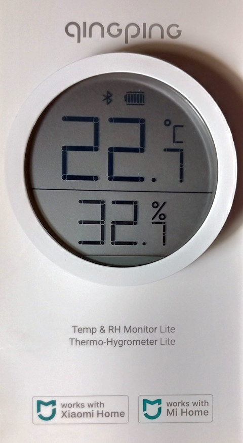
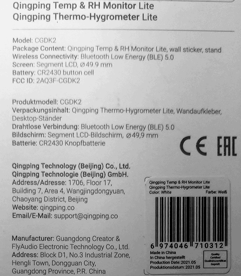
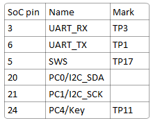
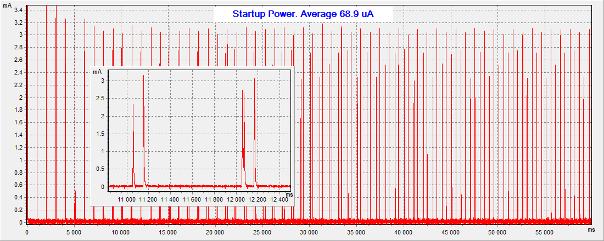
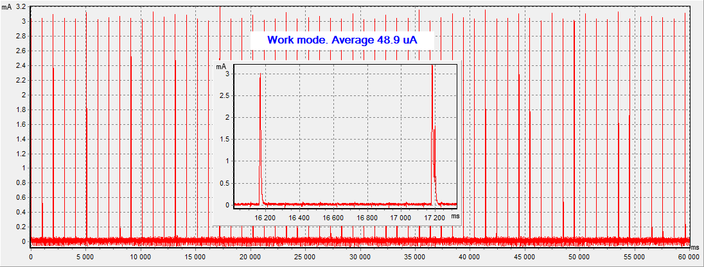
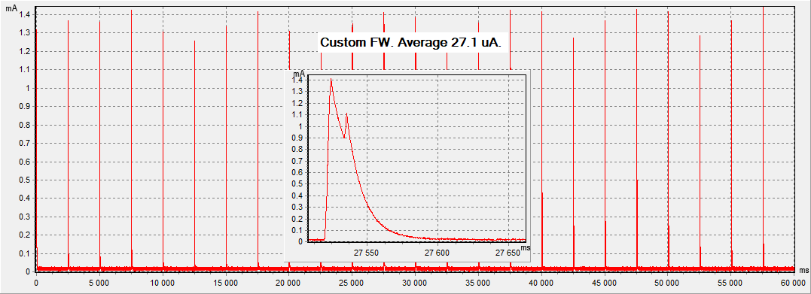

CGDK2: LCD, "Qingping Temp & RH Monitor Lite"
Manufacturer:
qingping.co


UUID-s
PCB:
Images from https://github.com/atc1441/ATC_MiThermometer/issues/135

Average power consumption (original firmware):


Maximum battery life 8 months!
(290mAh/0.0489mA/24h/30.5d = 8.1 months)
Average power consumption (
custom firmware
):

More than a year battery life (default settings)
(290mAh/0.0271mA/24h/30.5d = 14.6 months)